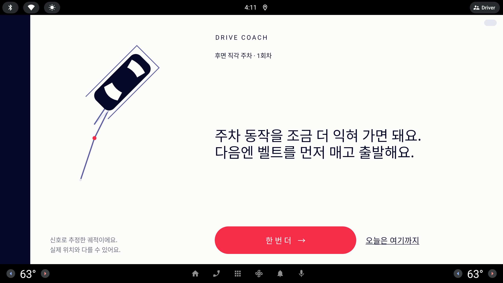

코치 문장 — 짧게, 마침표마다 줄바꿈
코치가 쓰는 문장(회차 멘트 · 오늘의 기록 총평 · 홈 코치 대화)의 길이 규칙 · 줄바꿈 방식 · 큰 글자 크기 다섯 가지. 시안마다 아래 예문 세 개를 그 규칙대로 실제로 다시 써서 오늘의 기록(1/3 화면), 회차 판정 오른쪽 절반, 코치 대화 오른쪽 절반에 넣었다. 숫자 없음, 높임 오용 없음.
사용자 피드백 (원문, 10/7) — #전역 - 코치가 하는 멘트들이 온 점 기준으로 줄 바꿈 필요
- 멘트가 나오는 부분에 장문이면 줄바꾸지 않은 부분도 거슬리고 줄바꾸더라도 약간 가독성/가시성이 떨어져 코치처럼 짧게 짧게 말해주고 보기에도 간단하고 이쁜 정도의 내용이면 해
twoLines). 총평 두 문장 · 160자 이하 · AI 답은 줄바꿈 없음. 홈 대화 한두 문장 · 80자 이하 · 줄바꿈을 공백으로 바꿈(validateSay). 큰 글자는 72 dp 로 그리고 넘치면 64 → 32 dp 까지 줄인다(ResultHeadline). 규칙 조언 문장(AdviceRules) 18개 중 12개가 20자를 넘는다.String.length(한글 한 자 = 1).✕ 조금씩 감이 오시는 것 같아요 (주어 = 감)
○ 조금씩 감이 오는 것 같아요
○ 많이 놀라셨겠어요 (주어 = 운전자)
→ 모든 시안 공통: AI 프롬프트에 한 줄 + 검증에서 몇 가지 흔한 오용("감이 오시", "실력이 느시", "늘으셨") 을 걸러 규칙 문장으로 폴백.
같은 예문 세 개 (지금)
시안마다 이 셋을 그 시안 규칙으로 다시 쓴다. 글자 수 = 문장별(공백·부호 포함).
| 어디 | 지금 문장 | 글자 수 | 무엇이 문제 |
|---|---|---|---|
| 총평 · 오늘의 기록 | 오늘 첫 주행치고 훌륭했어요, 감각이 꽤 살아나고 있네요. 다음엔 후진 중 갑작스러운 속도 변화에 조금 더 신경 써 보세요. | 32 + 36 = 69자 | 한 문장이 한 줄을 넘어 마침표 줄바꿈을 해도 세 줄 이상. 쉼표로 두 말을 이었고, 과제가 주차인데 "주행" 이라고 했다. |
| 회차 멘트 · 판정 | 방향은 맞게 섰어요. 마무리를 한 번만 더 살펴봐요. | 11 + 17자 | 이미 짧다 — 기준이 되는 좋은 예. |
| 홈 코치 대화 | 많이 놀라셨겠어요. 주차할 때였나요, 달릴 때였나요? | 10 + 18자 | 말풍선이 줄바꿈을 공백으로 바꿔 두 문장이 한 덩어리로 흐른다(지금 캡처: "주차인지 도로인지 / 말해 주시면" 처럼 문장 중간에서 꺾임). |



길이 상한만 있고 문장 단위 규칙은 없다
총 글자 수(90 / 160 / 80)만 막고, 한 문장이 얼마나 길어도 되는지는 정하지 않았다. 줄바꿈도 회차 멘트의 첫 마침표 한 번뿐이다.
문제
- 오늘의 기록 — 총평이 72 dp 에서 세 줄 이상이 되고, 한 문장이 줄 가운데에서 끝나 다음 문장이 같은 줄에서 시작한다("좋아졌어요. 이게 연습의")
- 회차 판정 — 지금은 짧아 괜찮지만 AI 가 90자 가까이 쓰면 두 번째 줄이 꺾여 세 줄이 된다
- 코치 대화 — 말풍선이 문장 중간에서 꺾인다("주차인지 도로인지 / 말해 주시면 골라 드릴게요.")
- 말투 — AI 가 "감이 오시는" 같은 높임 오용을 낸다(사용자 지적)
- 음성 — 같은 문장을 TTS 가 읽는다. 길면 판정 화면에서 말이 끝날 때까지 기다리는 시간이 길어진다
짧은 두 줄
어디서나 "두 문장, 한 문장 = 한 줄". 크기는 지금 72 dp 그대로 두고, 문장을 한 줄 폭(약 22자) 안으로 줄인다.
| 문장 수 | 두 문장 이하 (서두 · 조언 / 흐름 · 안전 / 공감 · 질문) |
| 문장 길이 | 한 문장 20자 이하 (공백·부호 포함) — 검증은 22자까지 통과(한 줄 폭) |
| 총 상한 | 회차 멘트 · 총평 · 홈 대화 모두 44자 (90 / 160 / 80 → 44) |
| 줄바꿈 | 문장 끝(. ? !) 뒤마다 줄바꿈 · 한 문장 안에 쉼표로 두 말을 잇지 않음 |
| 큰 글자 | 72 dp 고정(1/3 24px) · 말풍선 48 dp · 64 dp 아래로 줄이지 않음 |
| 총평 | 감각이 꽤 살아났어요. 후진할 땐 속도를 고르게 해 봐요. | 12 19 |
| 회차 | 방향은 맞게 섰어요. 마무리만 한 번 더 봐요. | 11 14 |
| 대화 | 많이 놀라셨겠어요. 주차였나요, 주행이었나요? | 10 14 |
장점
- 규칙이 숫자 하나(20자) — AI 프롬프트 · 검증 · 규칙 문장 테스트가 모두 같은 기준을 쓴다
- 지금 화면 크기 · 배치를 건드리지 않는다. 오늘의 기록 총평 아래가 비어 과제 줄 · `다시 시작` 이 위로 올라와도 된다
- TTS 도 짧아져 판정 화면 대기가 줄어든다
주의점
- 구현 — 규칙 조언 18개 중 12개, Fake 총평 문장 대부분을 다시 써야 한다(Claude, 문자열 + 전수 길이 테스트)
- AI 폴백 증가 — AI 가 20자를 자주 넘기면 규칙 문장으로 떨어진다. 프롬프트에 예시 두 개를 넣고, 검증은 22자까지 봐준다
- 정직성 — 짧아져도 사실만: 조언은 지표에서 고른 하나뿐(칸 정렬 같은 모르는 것은 여전히 말하지 않음)
구현CoachPrompts 프롬프트 · validate 문장별 길이 · 줄바꿈 함수 하나(sentenceLines) · AdviceRules/Fake 총평 문장 · 테스트 — Claude 단독 · 중간(반나절)
제목 + 한 마디
첫 문장은 짧은 "판정 제목" 으로 더 크게, 둘째 문장(고칠 것)은 본문 크기로 작게. 신문 제목과 부제처럼 두 층.
| 문장 수 | 정확히 두 문장 — 제목 · 한 마디 |
| 문장 길이 | 제목 12자 이하 · 한 마디 24자 이하 |
| 총 상한 | 38자 |
| 줄바꿈 | 제목 뒤 한 번(두 문장이라 = 마침표마다) |
| 큰 글자 | 제목 88 dp(1/3 29px) Ink · 한 마디 48 dp(16px) 흐린 Ink · 말풍선은 52 / 44 dp |
| 총평 | 감각이 돌아왔어요. 다음엔 후진할 때 속도를 고르게 해 봐요. | 10 23 |
| 회차 | 방향은 맞았어요. 마무리만 한 번 더 살펴봐요. | 9 16 |
| 대화 | 많이 놀라셨죠. 주차할 때였나요, 달릴 때였나요? | 8 18 |
장점
- 한눈에 "잘했나" 가 먼저 읽힌다 — 크기 대비로 위계를 만드는 앱의 포스터 언어와 맞다(굵기 없이)
- 조언 문장은 조금 더 길어도(24자) 작은 글자라 한 줄에 들어간다
주의점
- 가독성 — 고칠 것(정작 기억해야 할 말)이 작고 흐리다. 운전석 거리에서 48 dp 흐린 글자는 약하다
- 구현 — 화면 셋(판정 · 리포트 · 말풍선)이 문장을 둘로 나눠 두 크기로 그려야 한다(Codex) + 규칙 문장 다시 쓰기(Claude). 녹화 전 두 사람 작업
- AI 가 제목을 12자 안에 못 맞추면 폴백이 A 보다 잦다
구현A 의 Claude 작업 + Codex 화면 셋 두 크기 · 중간~큼
세 박자
조수석 강사처럼 끊어 말하기 — 아주 짧은 문장 셋까지. 줄이 하나 늘어나는 대신 줄마다 훨씬 짧아 글자를 80 dp 로 키운다.
| 문장 수 | 세 문장 이하 |
| 문장 길이 | 한 문장 14자 이하 |
| 총 상한 | 46자 |
| 줄바꿈 | 마침표 · 물음표마다(질문 하나도 둘로 나눌 수 있음) |
| 큰 글자 | 80 dp(1/3 27px) · 말풍선 48 dp |
| 총평 | 감각이 돌아와요. 후진은 천천히 해요. 속도는 고르게 유지해요. | 9 11 13 |
| 회차 | 방향은 맞았어요. 마무리만 남았어요. 한 번만 더 봐요. | 9 10 10 |
| 대화 | 많이 놀라셨죠. 주차할 때였나요? 달릴 때였나요? | 8 9 8 |
장점
- 가장 "코치처럼" 들린다 — TTS 로 들을 때 박자가 생겨 귀에 남는다
- 줄마다 짧아 글자를 키워도 넘치지 않는다 — 운전석 거리 가독성 가장 좋음
주의점
- 세로 공간 — 세 줄 × 80 dp 라 오늘의 기록에서 과제 줄 · `다시 시작` 과의 틈이 빠듯하다(그림처럼 겨우 들어감)
- 구현 — 지금 검증이 "두 줄 넘으면 버림" 이라 바꿔야 하고, 회차 멘트 계약 "서두.\n조언." 이 무너진다(AGENTS.md 문구 · 테스트 다수). 규칙 문장도 거의 전부 다시 씀
- 정직성 — 14자에 맞추다 보면 "후진은 천천히" 처럼 지표에 없는 일반론이 섞이기 쉽다
구현A 보다 넓음(검증 · 계약 · 문장 전부) · 큼
핵심어 표시
A 의 길이 규칙 그대로 + 고칠 것 한 낱말(또는 고를 낱말)만 Periwinkle 글자 + 밑줄. 굵게 하지 않고 색으로만 짚는다.
| 문장 수 | 두 문장 이하 (A 와 같음) |
| 문장 길이 | 한 문장 20자 이하 · 핵심어는 한 문장에 하나, 6자 이하 |
| 총 상한 | 44자 |
| 줄바꿈 | 마침표 · 물음표마다 |
| 큰 글자 | 72 dp · 핵심어 Periwinkle + 2 dp 밑줄(1/3 기준) |
| 총평 | 감각이 꽤 살아났어요. 후진할 땐 [속도를 고르게] 해 봐요. | 12 19 |
| 회차 | 방향은 맞게 섰어요. [마무리]만 한 번 더 봐요. | 11 14 |
| 대화 | 많이 놀라셨겠어요. [주차]였나요, [주행]이었나요? | 10 14 |
장점
- 짧은 문장 안에서도 "무엇을" 이 눈에 먼저 걸린다 — 판정 목록의 △ 항목(마무리)과 같은 말이 같은 색이라 이어 읽힌다
- 대화에서는 고를 수 있는 말을 짚어 "말로 이걸 고르면 된다" 가 보인다
주의점
- 구현 — 핵심어를 어떻게 아나: AI 에 표시(예: 대괄호)를 요구하면 형식 오류가 늘고, 앱 낱말 목록(속도 · 마무리 · 브레이크 · 벨트 · 지시등 …)으로 찾으면 확실하지만 목록 관리가 생긴다. 화면은
AnnotatedString(Codex) - 가독성 — Periwinkle 은 링크 색과 같아 "눌러지나?" 로 읽힐 수 있다(밑줄이 링크와 비슷)
- A 를 먼저 하고 나중에 얹을 수 있는 "추가 층"
구현A + 낱말 목록(Claude) + 화면 셋 색 칠하기(Codex) · 중간~큼
줄바꿈만
길이 상한(90 / 160 / 80)은 그대로, 마침표마다 줄을 바꾸고 쉼표 이음만 두 문장으로 나눈다. "짧게" 는 하지 않은 상태 — 비교용.
| 문장 수 | 제한 없음(총 글자로만) |
| 문장 길이 | 제한 없음 · 쉼표로 두 말을 잇지 않음 |
| 총 상한 | 지금 그대로 90 / 160 / 80자 |
| 줄바꿈 | 마침표 · 물음표마다 |
| 큰 글자 | 72 dp, 넘치면 64 → 56 dp 로 줄임(지금 방식) |
| 총평 | 오늘 첫 연습치고 훌륭했어요. 감각이 꽤 살아나고 있네요. 다음엔 후진 중 속도 변화에 조금 더 신경 써 보세요. | 16 15 30 |
| 회차 | 방향은 맞게 섰어요. 마무리를 한 번만 더 살펴봐요. | 11 17 |
| 대화 | 많이 놀라셨겠어요. 주차할 때였나요, 달릴 때였나요? | 10 18 |
장점
- 공수가 가장 작다 — 줄바꿈 함수 하나 + 말풍선의 "줄바꿈 → 공백" 치환 제거. 문장은 그대로
- 회차 멘트 · 대화처럼 이미 짧은 문장은 이것만으로 충분히 정리된다
주의점
- 가독성 — 사용자가 말한 "줄바꾸더라도 가시성이 떨어진다" 그대로: 총평은 세 줄 + 마지막 문장이 또 꺾여 네 줄, 글자가 64 dp 로 줄어든다(그림에서 72 dp 보다 작은 것)
- AI 가 긴 문장을 쓰면 여전히 화면이 꽉 찬다 — 사용자 요구("짧게") 의 절반만 푼다
구현Claude 줄바꿈 함수 · 작음(한두 시간)
다섯 안 비교
글자 수는 공백·부호 포함. 공수는 마감 10/9 · 녹화 10/7~8 기준. "규칙 문장" = 앱이 AI 없이 쓰는 문장(AdviceRules 조언 18개 · Fake 총평 · 홈 대화 규칙 답 · 가이드/힌트).
| 안 | 문장 수 | 문장 길이 | 총 상한 | 큰 글자 | 총평 줄 수 | 규칙 문장 다시 쓰기 | 누가 | 공수 |
|---|---|---|---|---|---|---|---|---|
| A 짧은 두 줄 | ≤ 2 | ≤ 20자 | 44 | 72 dp 고정 | 2 | 조언 12개 + Fake 총평 | Claude | 중간 |
| B 제목 + 한 마디 | 2 | 12 / 24자 | 38 | 88 / 48 dp | 2 | 서두 · 조언 전부 | Claude + Codex | 중간~큼 |
| C 세 박자 | ≤ 3 | ≤ 14자 | 46 | 80 dp | 3 | 거의 전부 + 계약 변경 | Claude | 큼 |
| D 핵심어 표시 | ≤ 2 | ≤ 20자 | 44 | 72 dp + 색 | 2 | A 와 같음 + 낱말 목록 | Claude + Codex | 중간~큼 |
| E 줄바꿈만 | 제한 없음 | 제한 없음 | 90 / 160 / 80 | 72 → 56 dp | 3~4 | 없음 | Claude | 작음 |
A 짧은 두 줄 — "두 문장, 한 문장 20자, 마침표마다 줄바꿈"
한 문장 20자는 72 dp 한 줄 폭(판정 약 22자 · 리포트 약 24자) 안이라 "한 문장 = 한 줄" 이 모든 화면에서 보장되고, 화면 코드를 거의 건드리지 않고 Claude 쪽(프롬프트 · 검증 · 규칙 문장)만으로 끝난다. 시간이 남으면 D 의 핵심어 색을 나중에 얹는다. 시간이 정말 없으면 E 만 먼저(줄바꿈) 넣고 A 를 이어서.
- 두 문장 이하. 한 문장 20자 이하(공백·부호 포함,
String.length). 검증은 22자까지 통과, 넘으면 규칙 문장으로 폴백 - 문장 끝(
. ? !) 뒤마다 줄바꿈. 한 문장 안에 쉼표로 두 말을 잇지 않는다 - 총 상한
REMARK_MAX_CHARS·SUMMARY_MAX_CHARS·DIALOG_MAX_CHARS= 44 - 숫자 없음 · 금지어 그대로 · "-시-" 는 운전자가 주어일 때만(감이 오시는 ✕ → 감이 오는 ○)
- 큰 글자 72 dp 고정, 64 dp 아래로 줄이지 않는다(넘치면 문장이 규칙 위반 → 테스트가 잡음)
- Claude:
CoachPrompts세 프롬프트에 규칙 + 예시 두 개 ·validate에 문장별 길이 · 높임 오용 몇 개 ·sentenceLines()(문장 끝마다 줄바꿈,twoLines대체) ·validateSay의 줄바꿈 → 공백 치환 제거 ·AdviceRules12문장 · Fake 총평 문장 다시 쓰기 · 규칙 문장 전수 길이 테스트 - Codex: 없음(화면은 이미 줄바꿈을 그대로 그린다) — 말풍선이 여러 줄을 그리는지만 캡처로 확인
- 공수: 중간(Claude 반나절) · 녹화 전에 넣을 수 있다